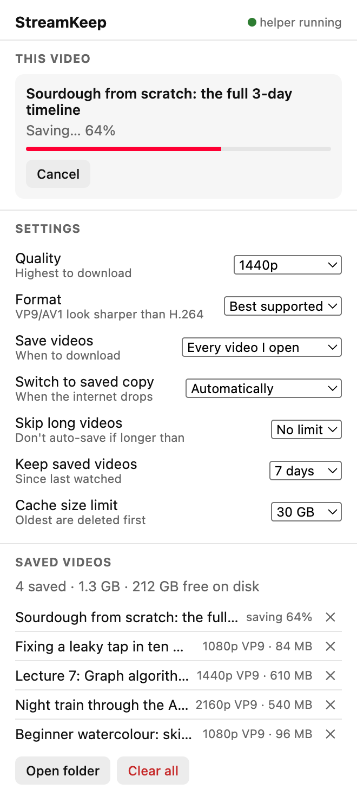

Your internet drops. The video keeps going.
StreamKeep saves the YouTube video you're watching in the background. When the connection goes, it carries on playing in the same page, from the same second.
Free and open source. Safari, Chrome and Firefox.
You open a video. StreamKeep starts saving it right away, and the toolbar icon counts up.
No download button. No separate file.
You keep watching on YouTube like you always do. StreamKeep works behind it, and only steps in when the stream stops.
Open any video
A small helper on your computer starts saving it at the quality you picked.
Watch as usual
The toolbar icon shows the progress, and turns green once the whole video is saved.
The connection drops
Wi-Fi cuts out, the train enters a tunnel, or YouTube shows its error screen.
It keeps playing
The saved copy takes over in the same player, from the same second. Click "Back to YouTube" when you're online again.
Small, and stays out of the way
Everything is in the toolbar popup. Saved videos clean themselves up, so the cache never fills your disk.
- Sharp picture
- Up to 4K, in VP9 or AV1 when your browser plays them, H.264 when it doesn't.
- Only switches when it has to
- A slow moment isn't enough. StreamKeep checks the connection is really gone before taking over.
- Cleans up after itself
- Videos you haven't watched for a week are deleted, and the cache has a size limit. Both are adjustable.
- Stays on your computer
- No account, no server, no tracking. The extension only talks to the helper on your own machine.
- Full controls
- Seek, volume, fullscreen and the usual YouTube keys (space, j, l, m, f) on the saved copy.
- You choose what to save
- Save every video you open, or only when you click Save. Skip videos over a length you set.

The toolbar popup, mid-save.
Install
StreamKeep has two parts: the browser extension, and a small helper that does the saving with yt-dlp and ffmpeg. Set up the helper once, then add the extension to your browser.
First, the helper
Works on macOS and Linux. It runs in the background, starts when you log in, and only listens on your own computer.
# macOS (on Linux, use your package manager) brew install yt-dlp ffmpeg git clone https://github.com/DavidMusijenko/streamkeep cd streamkeep ./helper/install.sh
Chrome
Also Edge, Brave, Arc and other Chromium browsers
- Download the Chrome zip from the latest release and unzip it.
- Open
chrome://extensionsand turn on Developer mode. - Click "Load unpacked" and pick the unzipped folder.
Firefox
Version 128 or newer
- Download the Firefox zip from the latest release.
- Open
about:debugging, choose "This Firefox", then "Load Temporary Add-on", and pick the zip. - Firefox removes temporary add-ons when it quits. To keep it, use Firefox Developer Edition with signing turned off.
Safari
macOS, needs Xcode
- Run
TEAM=your-team-id ./install-app.shin the repo. A free Apple ID works. - In Safari, open Settings, then Extensions, and tick StreamKeep.
- On youtube.com, choose "Always Allow on This Website".
Questions
Is this a video downloader?
Not in the usual sense. It doesn't give you files to keep or share. It keeps a temporary copy of what you're already watching so playback doesn't stop, and deletes it after a while.
Is it allowed?
YouTube's terms don't allow saving videos outside its own features, so using StreamKeep is your own call. YouTube Premium offers official offline playback in its apps.
Why does it need a helper app?
Browsers can't save a whole YouTube video by themselves. The helper uses yt-dlp to save it, then hands it to the extension, which plays it inside the page.
How much space does it use?
About what the video weighs: roughly 100 MB for ten minutes at 1080p. The default limit is 30 GB, and you can lower it.
Does it see what I watch?
Only your computer does. There are no servers, analytics or accounts. The code is all on GitHub.
Will it be in the extension stores?
The Chrome Web Store and Apple's App Store don't accept YouTube saving tools, so StreamKeep is shared as source and release builds here.